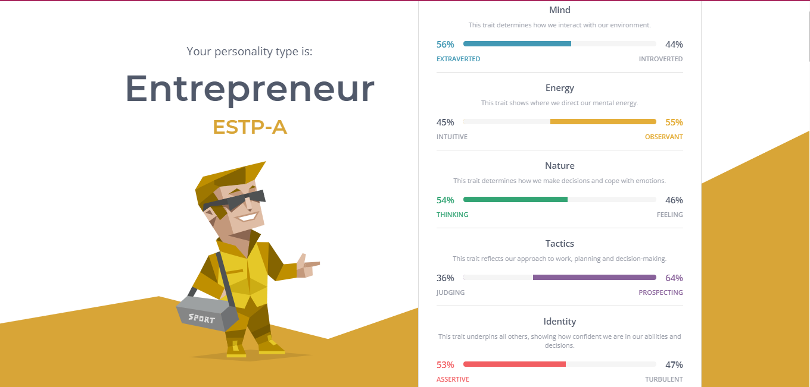

My Personal Traits and Personality Test
- Honest
- Loyal
- Cooperative
- Nonchalant
- Adventurous

Click image to visit website
This test was very enlightening as to what choices or actions i would take in random situations, its really eye opening to notice your everyday choices. The test was fairly accurate in my opinion.